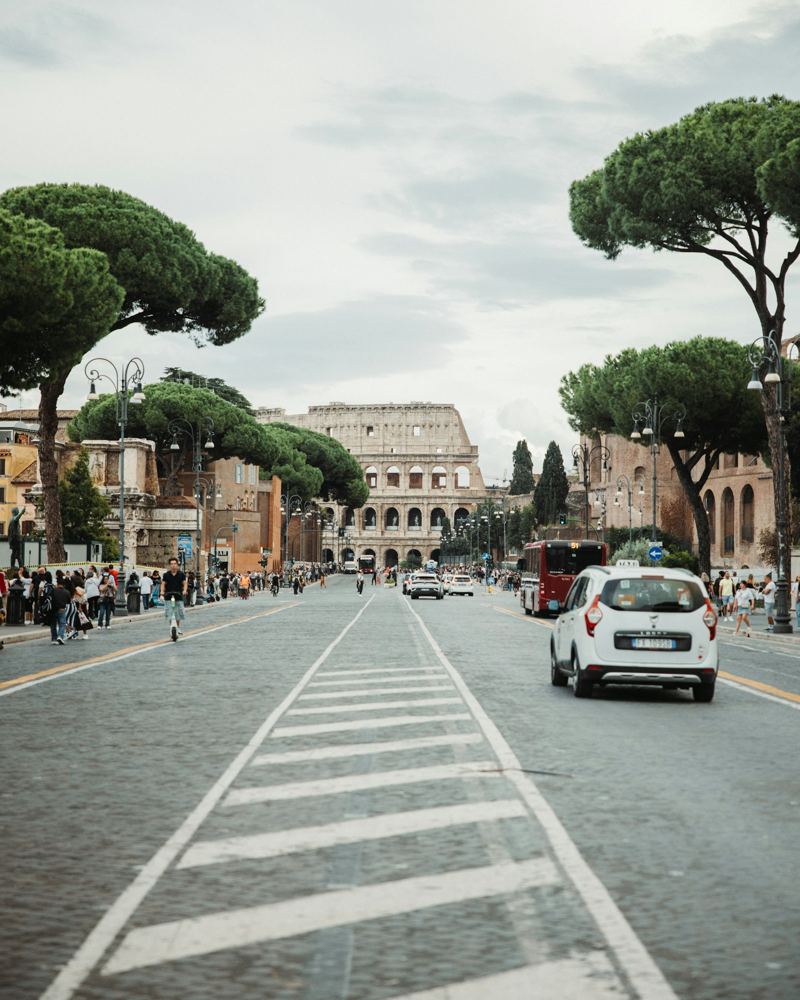
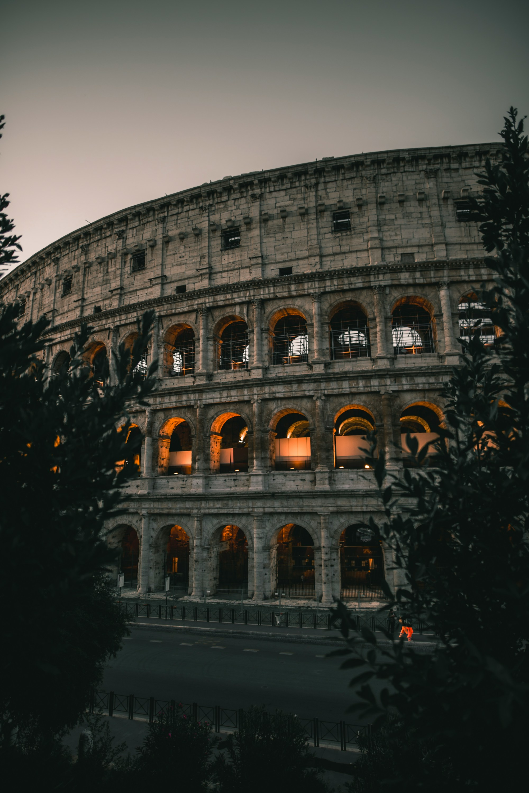
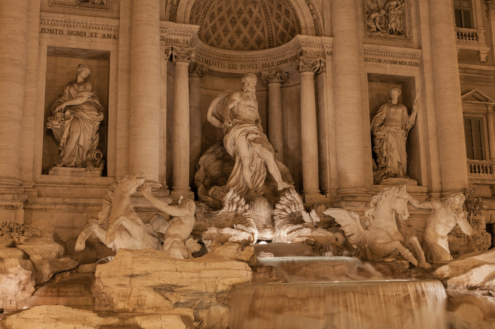
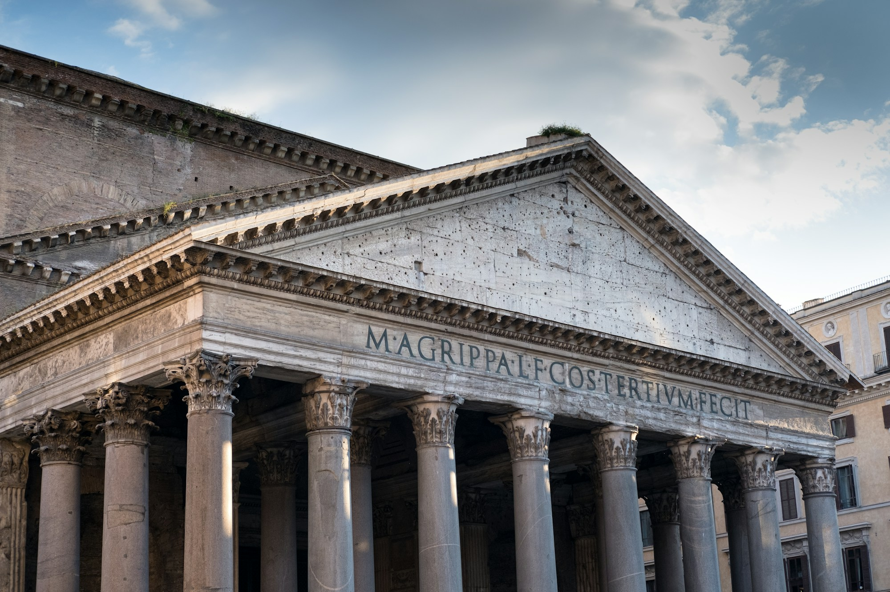
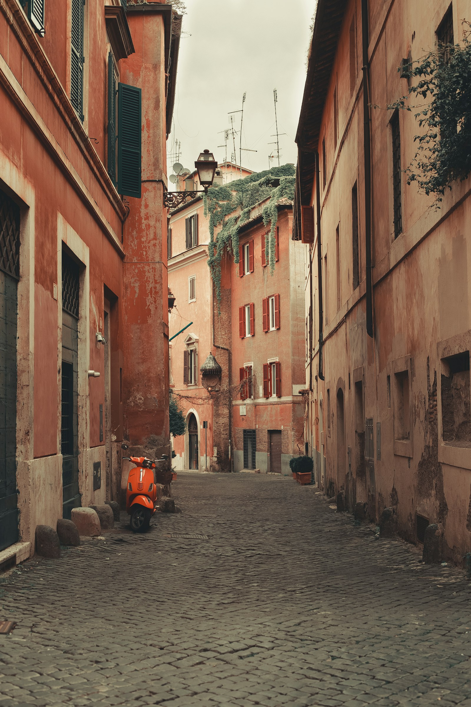

Rome Italy
Rome Taxi & Private Transfers
Private transportation for airport journeys, hotels, railway stations, sightseeing and travel around Rome.
- Pickup
- Rome
- Destination

Rome, practically
Getting Around Rome Without the Guesswork
Rome rewards visitors and tests them in the same hour. You land and need to reach a hotel in the historic centre with your bags. You step off a train and want to go straight to an appointment. You have an afternoon for the Forum and the Pantheon and no wish to work out which line gets you to which gate.
A pre-arranged private ride covers those moments: arriving in Rome, reaching your hotel, travelling with luggage, getting to a railway station, visiting attractions, travelling for business, or carrying on to another destination. We are not claiming it is quicker or cheaper than other options. We are saying it takes some of the guesswork out of the route.
A note on coverage. We are confirming exactly where and how we operate in Rome, so please send your request and we will confirm what we can arrange.
Services in Rome
A Ride for the Way You're Travelling
- 01
Airport Transfers
Transportation between Rome airports and your destination. Which airports we serve is confirmed when you book.
Airport transfers - 02
Hotel Transfers
Private pickup or drop-off between accommodation and another destination.
- 03
Railway Station Transfers
Useful for travellers arriving or departing by train.
- 04
City Transfers
Transportation around Rome for hotels, attractions, restaurants, business locations and other destinations.
City transfers - 05
Private Transfers
For direct journeys from Rome to another destination.
Private transfers - 06
Chauffeur Service
For planned business, sightseeing or multi-stop itineraries where appropriate.
Chauffeur service
The city
Rome Is Full of Places Worth Reaching
These landmarks are context for your trip, not a promise of pickup at each one. Busy historic areas often have specific access or pickup arrangements, so the meeting point may be nearby rather than at the monument itself. A transfer does not include a guide or tour.



Also on many itineraries: Piazza Navona Spanish Steps
Arrivals
Arriving in Rome? Start With the Route Ahead.
The first journey of a trip sets the tone. These are the arrival scenarios we hear about most. For airport journeys in detail, see airport transfers. We do not promise flight monitoring, meet-and-greet or waiting time here.
- Airport→Hotel
- Airport→Meeting
- Airport→Another destination
- Railway station→Hotel
- Station→Business appointment

Your pace
See More of Rome, At Your Own Pace
Private transportation can help you move between the places you have planned to visit. The sequence on the right is an illustrative travel example only. A driver waiting throughout the day is not automatically included; if you want several stops or a full day with a driver, ask about the chauffeur service.
- Hotel
- Historic centre
- Sightseeing
- Restaurant
- Hotel
Business
Rome for Business
A working day in Rome often means several fixed points. A private ride can link them without you re-planning each leg. No guaranteed punctuality is claimed; the plan is built around the time you give us.
- Hotel→Meeting
- Meeting→Office
- Conference venue→Transportation
- Station or airport→Connections
- Multiple business→Destinations
Families & luggage
Travelling Through Rome With Family or Luggage
Cobbled streets and stairs make bags feel heavier. Think about the children, the suitcases, the carry-on bags, whether you are travelling as a group, and where exactly you can be picked up.
Give us accurate passenger and luggage information when you book. We do not list capacities or child-seat availability here; we confirm what can be arranged once we know your needs. For larger parties see group transfers.
Before you send
The Right Pickup Point Matters
Rome has busy streets, historic areas and pedestrian zones, and vehicle access can differ from one place to the next. A clear pickup point saves time for everyone. We make no claims here about specific traffic-zone rules.
Booking channel to be connected. Contact details are placeholders in the footer.
- Exact pickup locationStreet and number, or landmark
- Hotel name and addressWhen applicable
- DestinationAddress, hotel or station
- DateThe day you are travelling
- TimePickup or arrival time
- Passenger countAdults and children
- Luggage informationBags and any large items
Examples
Where Could Your Rome Journey Begin?
These are examples of the type of journey you can ask about, not a list of confirmed routes. There are no prices or journey times here.
- 01Airport → Rome hotel
- 02Rome hotel → Railway station
- 03Hotel → Historic centre
- 04Rome → Florence
- 05Rome → Naples
- 06Rome → Another Italian destination
Local know-how
Useful Things to Know Before Travelling Around Rome
- Busy areas
- Historic and tourist areas can have complicated vehicle access, so the practical meeting point may be a street or two away.
- Pickup locations
- A clear meeting point, such as a named entrance or square, can make the journey easier.
- Luggage
- Share luggage details before travelling so the arrangement suits what you are bringing.
- Timing
- Allow realistic time for traffic and for any planned connection, such as a train or a flight.
- Destination details
- Use the exact hotel, venue or destination name where possible.
Deciding
When Private Transportation Makes Sense
Public transport is a good choice for many trips in Rome. A private ride is not always better, cheaper or faster. It tends to make sense in situations like these:
- Direct hotel transportation
- Travelling with luggage
- Travelling as a family
- Travelling as a group
- Connecting several parts of a trip
- Business appointments
- Airport or station connections
Choosing
Choose the Right Ride for Your Rome Journey
- Starting or ending at an airport?Airport Transfer Airport pickup and drop-off.
- Moving around the city?City Transfer Within and around Rome.
- Going somewhere specific?Private Transfer Direct journeys between Rome and another destination.
- Heading to another city?Long-Distance Transfer Longer intercity journeys.
- Travelling together?Group Transfer Families and groups.
- A day of several stops?Chauffeur Service Planned itineraries and business days.
Booking
Booking Your Rome Journey
Tell Us Your Pickup
Provide your starting location.
Tell Us Your Destination
Share the exact destination.
Add Travel Details
Provide date, time, passengers and luggage information.
Confirm Your Journey
Review the transportation details before travelling.
Questions
Rome Taxi Questions
Direct answers to what visitors ask first.
Can I book a private taxi transfer in Rome?
You can send a request for a private transfer in Rome with your pickup, destination, date, time and passenger details. We are confirming our Rome coverage, so we will tell you what we can arrange for your journey.
Can I travel from a Rome airport to my hotel?
You can request a ride from a Rome airport to your hotel. We confirm which airports we serve when you book, so include the airport name and your flight details.
Can I book transportation from a railway station?
Yes, you can ask for a ride from a railway station to your hotel or another address. Give us the station, a clear meeting point if you know one, and your arrival time.
Can I travel around Rome with luggage?
Yes. Tell us how many bags you have and mention anything large, so the arrangement suits what you are carrying.
Can families book private transportation in Rome?
Yes. Let us know how many adults and children are travelling and what luggage you have. We confirm what can be arranged, including any child-seat request, after you send your details.
Can I book a transfer from Rome to another Italian city?
You can request a journey from Rome to another city, such as Florence or Naples. These are examples of journey types, and we confirm whether we can take a given route once you send it.
Can I arrange transportation to Rome attractions?
Yes, you can ask for a ride to an attraction. Busy historic areas may have specific access or pickup arrangements, so the meeting point may be nearby. A transfer does not include a guide or tour.
What information do I need to provide when booking?
Your exact pickup location, hotel name and address where relevant, destination, date, time, number of passengers and luggage information.
Can I request a multi-stop Rome journey?
You can ask. Multiple stops and a driver for the day are usually arranged as a chauffeur service, and we confirm what is possible for your plan.
Your Rome Journey Starts With the Right Pickup
Share your route and travel details, and arrange the transportation that fits your trip.